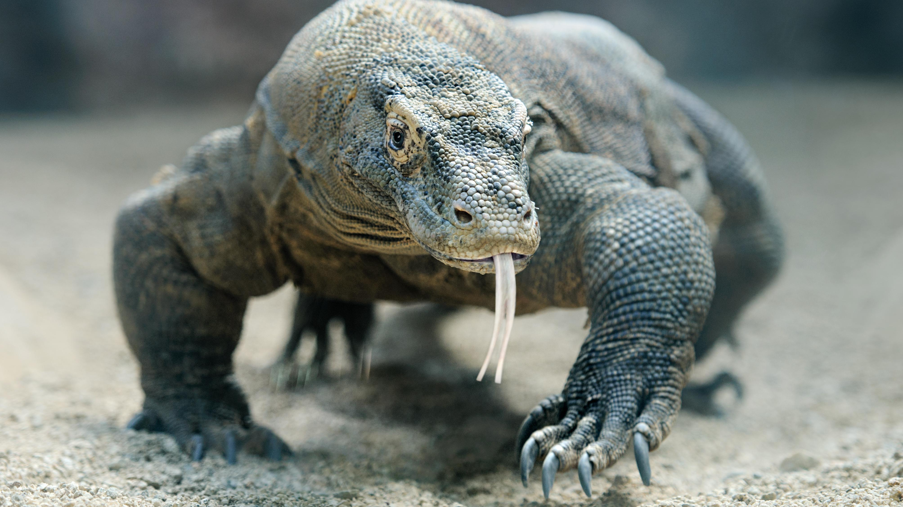

Waran z Komodo (Varanus komodoensis)
gatunek gada z rodziny waranów nazywany smokiem z Komodo. To największa współcześnie żyjąca jaszczurka. Odkryta w 1910 roku. Aby ją chronić, założono w 1980 r. Park Narodowy Komodo.Aktywny w dzień, noc spędza w wygrzebanych przez siebie norach. Poluje z zasadzki, do upatrzonej zdobyczy zakrada się od tyłu. Atakując mniejszą zdobycz, może rzucić się wprost do jej szyi. Większą ofiarę (np. jelenia czy dziką świnię) stara się najpierw powalić na ziemię (m.in. przy użyciu potężnego ogona, którego siła uderzenia równa się sile ciężaru 2 ton), a następnie rozedrzeć na strzępy lub doprowadzić do jej wykrwawienia. 